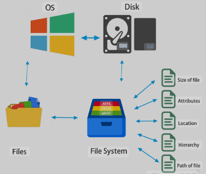
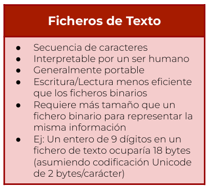
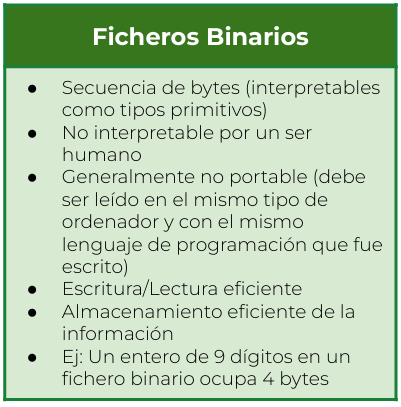

Un fichero (o archivo) se refiere a una secuencia de datos almacenados en un sistema de archivos en un dispositivo de almacenamiento, como un disco duro o una unidad USB. Los ficheros pueden contener información en forma de texto, imágenes, audio, vídeo u otros formatos de datos.

En Java, los ficheros pueden clasificarse en dos categorías principales: ficheros de texto y ficheros binarios. La distinción entre estos dos tipos de ficheros radica en la forma en que se almacenan y se procesan los datos.
 
Podemos usar Java para:
- Leer datos de un archivo.
- Escribir datos en un archivo.
- Crear o eliminar archivos.
- Verificar si existe un archivo o directorio.
Existen varias clases para trabajar con archivos, principalmente en el paquete java.io y java.nio.file.